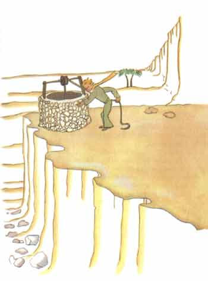

“那些人们，他们往快车里拥挤，但是他们却不知道要寻找什么。于是，他 们就忙忙碌碌，来回转圈子……”小王子说道。
他接着又说：
“这没有必要……”
我们终于找到的这口井，不同于撒哈拉的那些井。撒哈拉的井只是沙漠中挖 的洞。这口井则很象村子中的井。可是，那里又没有任何村庄，我还以为是在做 梦呢。
“真怪，”我对小王子说：“一切都是现成的：辘轳、水桶、绳子……”
他笑了，拿着绳子，转动着辘轳。辘轳就象是一个长期没有风来吹动的旧风 标一样，吱吱作响。

“你听，”小王子说：“我们唤醒了这口井，它现在唱起歌来了……”我不愿 让他费劲。我对他说：
“让我来干吧。这活对你太重了。”
我慢慢地把水桶提到井栏上。我把它稳稳地放在那里。我的耳朵里还响着辘 轳的歌声。依然还在晃荡的水面上，我看见太阳的影子在跳动。
“我正需要喝这种水。”小王子说：“给我喝点……”
这时我才明白了他所要寻找的是什么！
我把水桶提到他的嘴边。他闭着眼睛喝水。就象节日一般舒适愉快。这水远 不只是一种饮料，它是披星戴月走了许多路才找到的，是在辘轳的歌声中，经过 我双臂的努力得来的。它象是一件礼品慰藉着心田。在我小的时候，圣诞树的灯 光，午夜的弥撒的音乐，甜蜜的微笑，这一切都使圣诞节时我收到的礼品辉映着 幸福的光彩。
“你这里的人在同一个花园中种植着五千朵玫瑰。”小王子说：“可是，他 们却不能从中找到自己所要寻找的东西……”
“他们是找不到的。”我回答道。
“然而，他们所寻找的东西却是可以从一朵玫瑰花或一点儿水中找到的……”
“一点不错。”我回答道。
小王子又加了一句：
“眼睛是什么也看不见的。应该用心去寻找。”
我喝了水。我痛快地呼吸着空气。沙漠在晨曦中泛出蜂蜜的光泽。这蜂蜜般 的光泽也使我感到幸福。为什么我要难过……
小王子又重新在我的身边坐下。他温柔地对我说：“你应该实践你的诺言。”
“什么诺言？”
“你知道……给我的小羊一个嘴套子……我要对我的花负责的呀！”
我从口袋中拿出我的画稿。小王子瞅见了，笑着说：
“你画的猴面包树，有点象白菜……”
“啊！”
我还为我画的猴面包树感到骄傲呢！
“你画的狐狸……它那双耳朵……有点象犄角……而且又太长了！”
这时，他又笑了。
“小家伙，你太不公正了。我过去只会画开着肚皮和闭着肚皮的巨蟒。”
“啊！这就行了。”他说：“孩子们认得出来。”
我就用铅笔勾画了一个嘴套。当我把它递给小王子时，我心里很难受：
“你的打算，我一点也不知道……”
但是，他不回答我，他对我说：
“你知道，我落在地球上……到明天就一周年了……”
接着，沉默了一会儿，他又说道：
“我就落在这附近……”
此时，他的面颊绯红。
我不知为什么，又感到一阵莫名其妙的心酸。这时，我产生了一个问题：
“一星期以前，我认识你的那天早上，你单独一个人在这旷无人烟的地方走 着；这么说，这并不是偶然的了？你是要回到你降落的地方去是吗！”
小王子的脸又红了。
我犹豫不定地又说了一句：
“可能是因为周年纪念吧？……”
小王子脸又红了。他从来也不回答这些问题，但是，脸红，就等于说“是的”， 是吧？
“啊！”我对他说：“我有点怕……”
但他却回答我说：
“你现在该工作了。你应该回到你的机器那里去。我在这里等你。你明天晚 上再来……”
但是，我放心不下。我想起了狐狸的话。如果被人驯服了，就可能会要哭的……